AMP Code Agent Tool Review
I decided to try AMP, a new AI agent tool. I gave it a real-world task: creating the “Layouts Concepts” documentation for a new open-source web framework called Air. This involved both coding (because I needed to understand it myself by building some examples) and then actually writing the documentation on it. It was something that I actually needed to get done, making it a nice realistic task to test whether it could be useful to me. The PR was accepted and merged.
This review covers the entire process, from setting up AMP and generating a working application to writing the final documentation and seeing diffs and explaining what I needed to do myself and how editing the Agent’s output felt.
TLDR: It was a very powerful coding tool that did much better than I expected and is worth trying.
Enroll Now on Maven →Getting Started with AMP
Setting up AMP was easy. It offers integrations for VS Code, Cursor, and a CLI. Since I’ve been using Cursor a lot lately, I opted for that extension [00:00:15].
AMP provides a $10 free tier to get started, which is what I used for this project. The entire task ended up costing $4.10 of that credit [00:00:21].
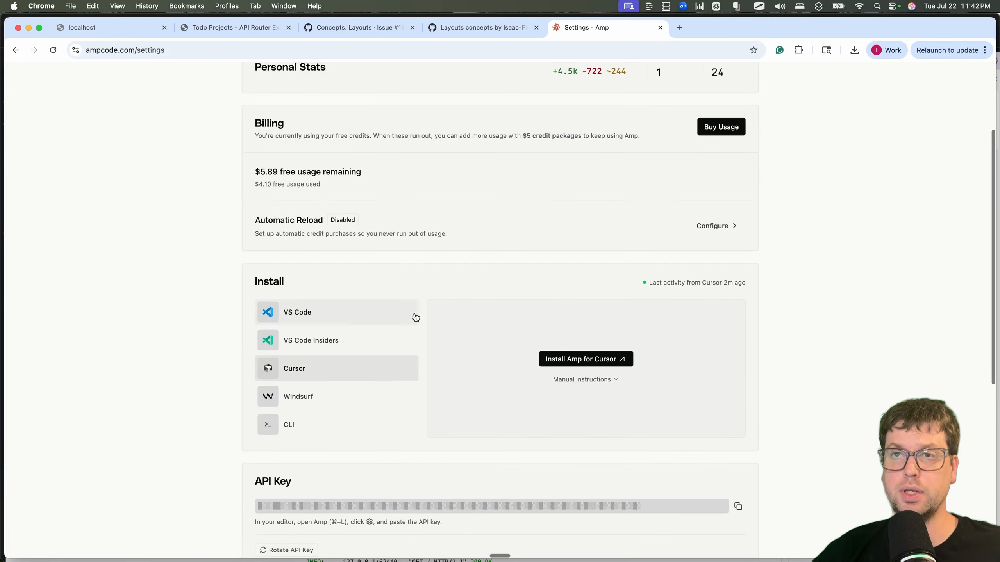
The Task: Creating a Layout Concept Guide for Air
Air is a new web development framework. It’s brand new and currently in alpha [00:00:33]. This means it’s not in the training data of any major AI models.
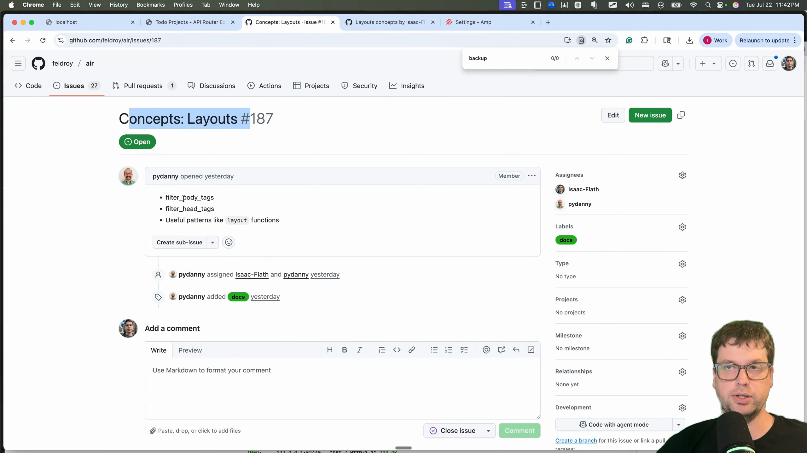
Porting FastHTML Examples
To get started, I needed to get familiar with common web-dev patterns inside of Air. I decided to port a to-do application I had previously built for a talk on the FastHTML framework [00:01:24]. The talk demonstrated various ways to structure a project, from a single file to more complex patterns using API routers and showed 4 different approaches [00:02:03].
I gave AMP the task of rewriting these FastHTML examples for Air, providing it with both projects in my workspace.
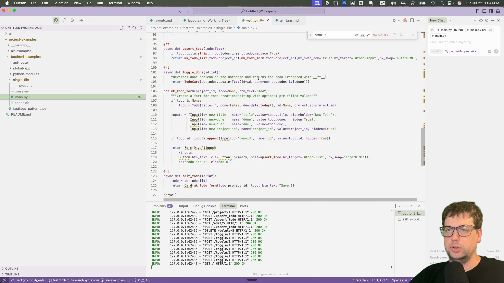
AMP in Action: Code Generation
I described what I wanted and pointed AMP to the repositories. It was able to see both directories in my workspace and looked through the source code of both. [00:02:36].
It didn’t do anything malicious, but I don’t remember giving it any permissions and it started making files and editing them. It caught me a bit by surprise, but also meant that I moved faster than I would have otherwise. I was a bit worried about it in the moment, but given the results I think it saved me quite a bit of time.
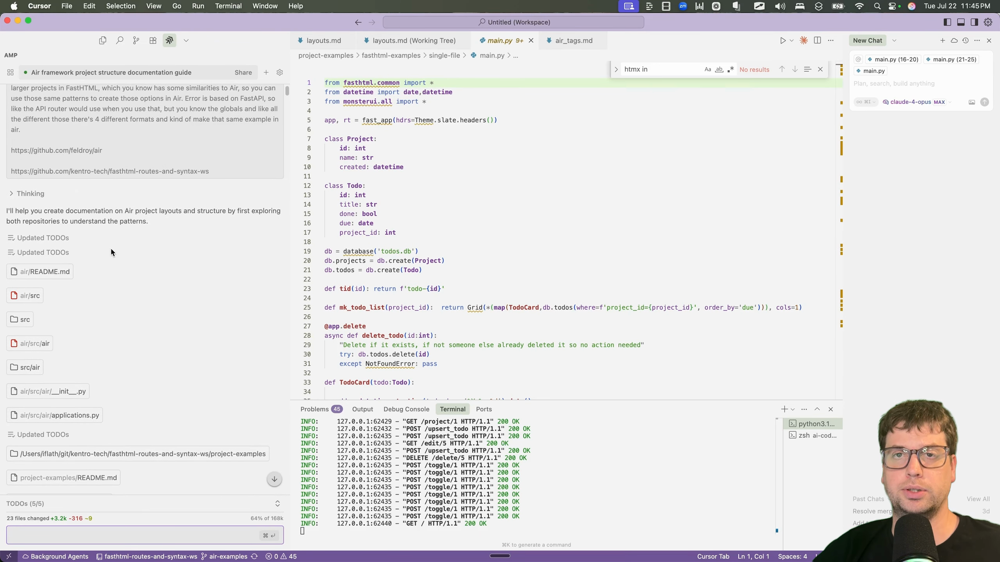
A second thing that irked me initially was the default of enter being to create a new line in the prompt rather than submitting. By the end of the process I began to appreciate that, because it meant more natural creation of more detailed prompts and instructions. It’s an unsual design choice, but I think it’s a good one.
Debugging with AMP
The first version of the generated app ran, but writing to the database was failing [00:03:00]. I copied the server logs, fed them back to AMP, and asked it to fix the problem.
It successfully identified the issue from the logs and fixed the database write errors on the first try [00:03:06].
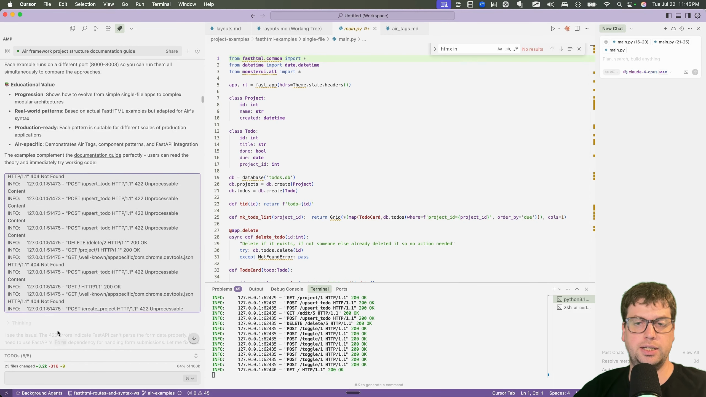
The Generated Todo App
I had a fully working application. It’s a project-based to-do app where you can create projects, and within each project, you can add, edit, and delete tasks [00:03:24]. It handles due dates, highlighting overdue tasks in red and other small styling features.
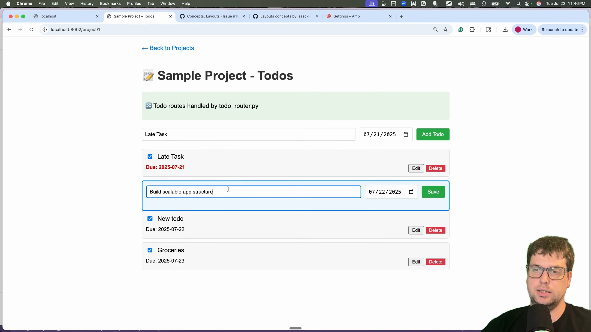
The app was had minor UI bug where a “done” checkbox was always checked but otherwise was functional [00:03:48].
Code Review: API Router Implementation
Air is built on top of FastAPI, so it can use FastAPI’s API Router pattern directly [00:04:27]. AMP correctly identified this and structured the code accordingly, creating separate router files and including them in the main application file.
# main.py
...
from .domain.projects.router import router as projects_router
from .domain.todos.router import router as todos_router
...
# Include routers from other files
app.include_router(projects_router)
app.include_router(todos_router)It also added some helpful sample data and logging, complete with the typical AI-generated emojis [00:04:51].
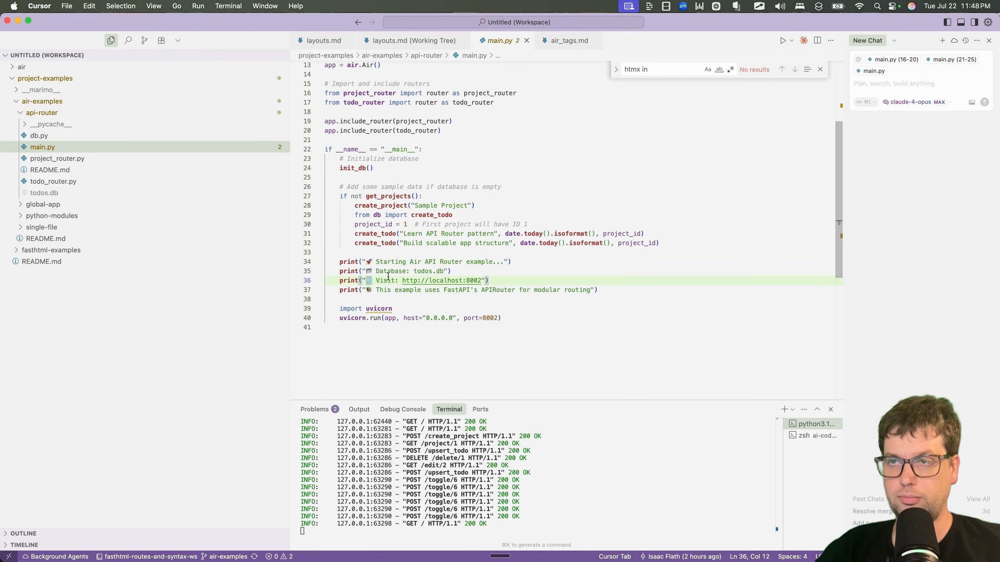
Database Implementation Analysis
The original FastHTML examples used a library called FastLite. AMP translated these operations into raw SQL strings [00:05:09]. While this isn’t the most robust solution, it’s clear and understandable. I didn’t ask for an ORM, so this was a reasonable choice for educational material.
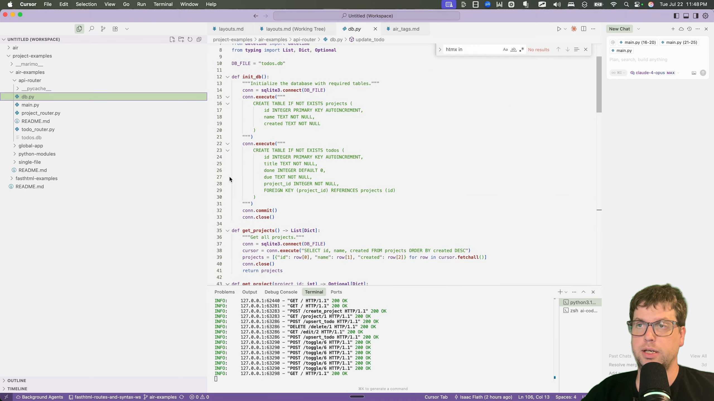
However, some of the code it produced felt a bit fragile, like using integer indexing to access database columns [00:05:36]. It’s a minor complaint, but something I’d refactor in a real production app.
CSS and UI Decisions
The original examples used a custom CSS framework I built called Monster UI, which is specific to FastHTML [00:06:15]. This framework wouldn’t work with Air and it chose to use raw CSS to style the components [00:06:24]. I liked that choice as it kept it simple rather than pulling in a different UI framework.
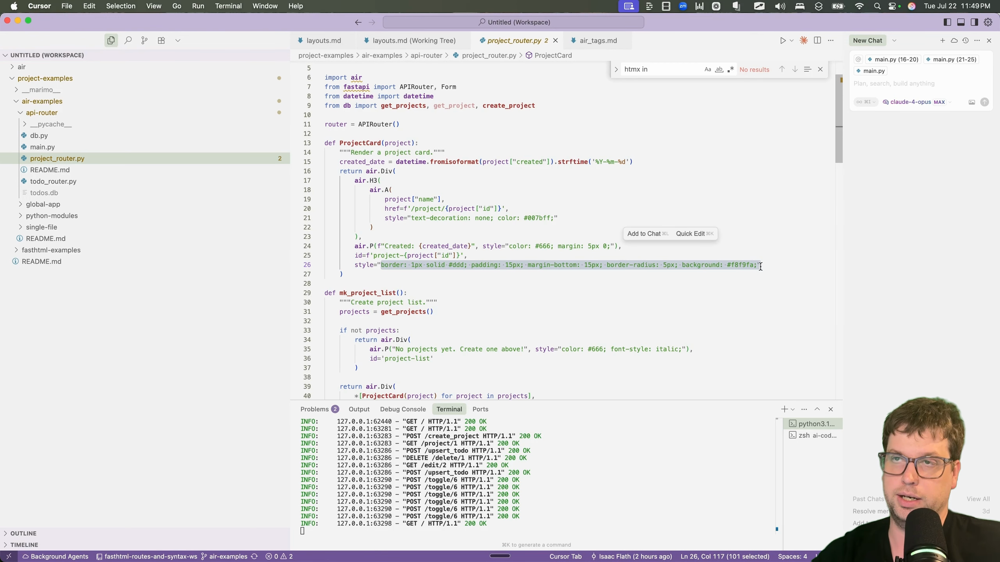
Documentation Writing Phase
Now that I understood how layouts could be useful, I moved on to writing the documentation [00:06:48]. I prompted AMP to create a “Layouts Concepts Guide” based on the patterns we had just implemented.
The final result, after some manual editing, was a clean, well-structured guide that was merged into the official Air documentation [00:07:03]. It starts with the core philosophy, explains the built-in layouts, and then details how to create more advanced, custom layout patterns.
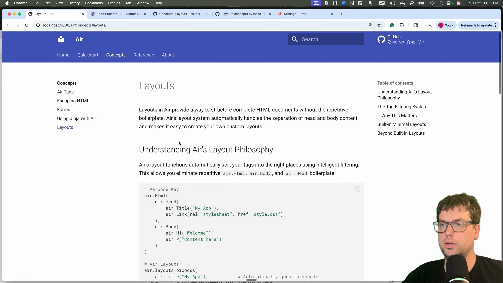
Manual Refinements Required
AMP’s first draft wasn’t perfect, and I wouldn’t expect it to be. The agent did a good job on the core content but then kept going, adding sections on error pages, form patterns, and other concepts that were out of scope for this specific guide [00:07:42]. That’s great, because I gave it vague instructions and it did a great job of giving me something I could work with and curate to my liking quickly.
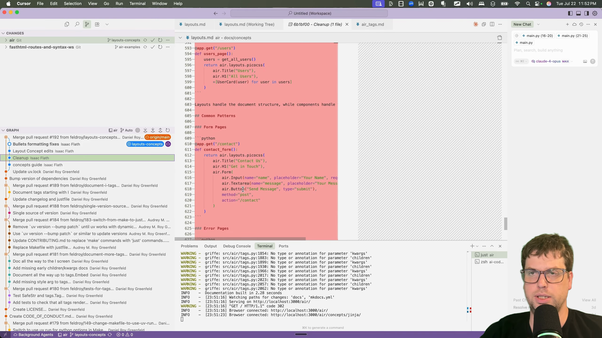
My main task was simplification. I deleted large chunks of irrelevant content from the end of the document [00:08:03]. I also minimized the code examples by removing boilerplate and consolidated multiple, near-identical examples into a single, clearer one [00:08:36].
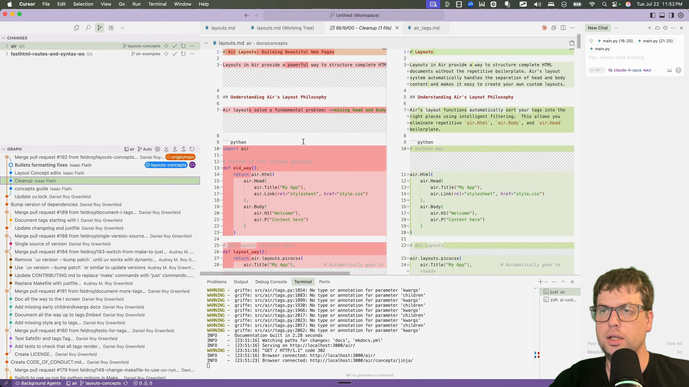
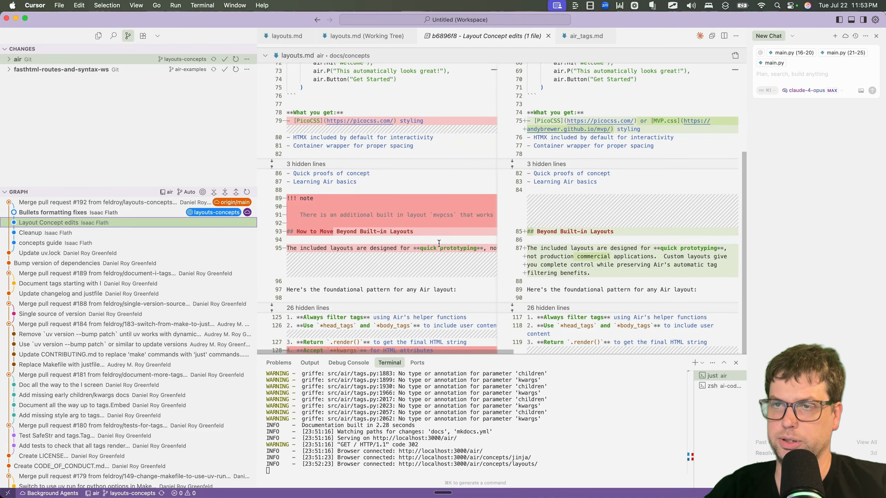
This editing process was far more efficient than starting from scratch.
Final Verdict
Overall, I was pretty happy with AMP’s performance. For the coding task, it was incredibly helpful and significantly faster than I would have been. For the documentation writing, it was really helpful and sped me up but I am not convinced it was any better than Claude Opus or Gemini 2.5 Pro using claude code or the gemini CLI.
Overall, Amp was useful for this task.